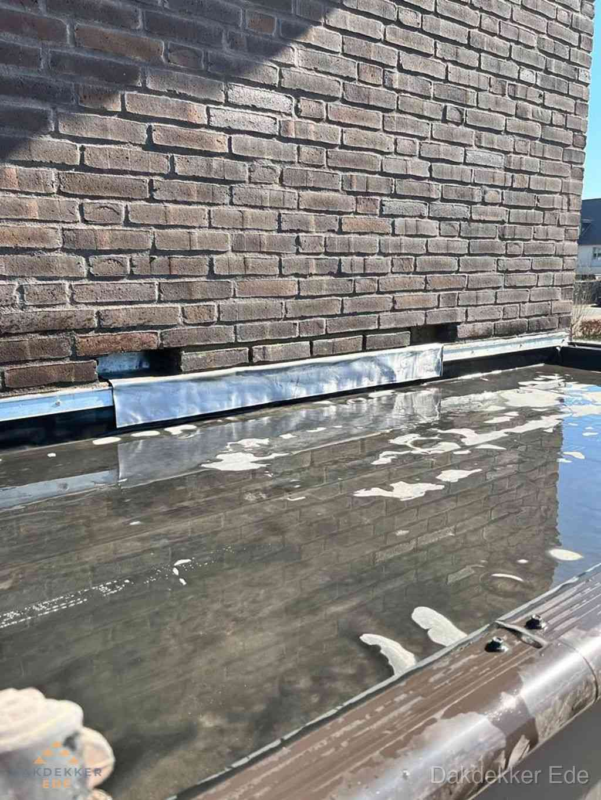
Daklekkage
Wij sporen de oorzaak op: bij dakpannen, zinkwerk, loodslabben, dakgoten, dakdoorvoeren of op het platte dak. Eerst maken we het waterdicht, daarna repareren we definitief.
Dakdekker in Ede, dag en nacht bereikbaar
Lekkage, losse pannen of een dak dat op is? Wij komen gratis kijken en zeggen eerlijk wat er nodig is. Plat dak of pannendak, met 10 jaar schriftelijke garantie.
5 sterren op Google
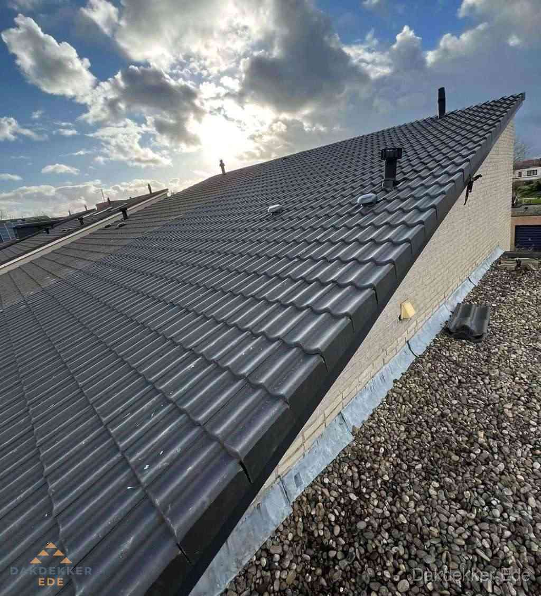
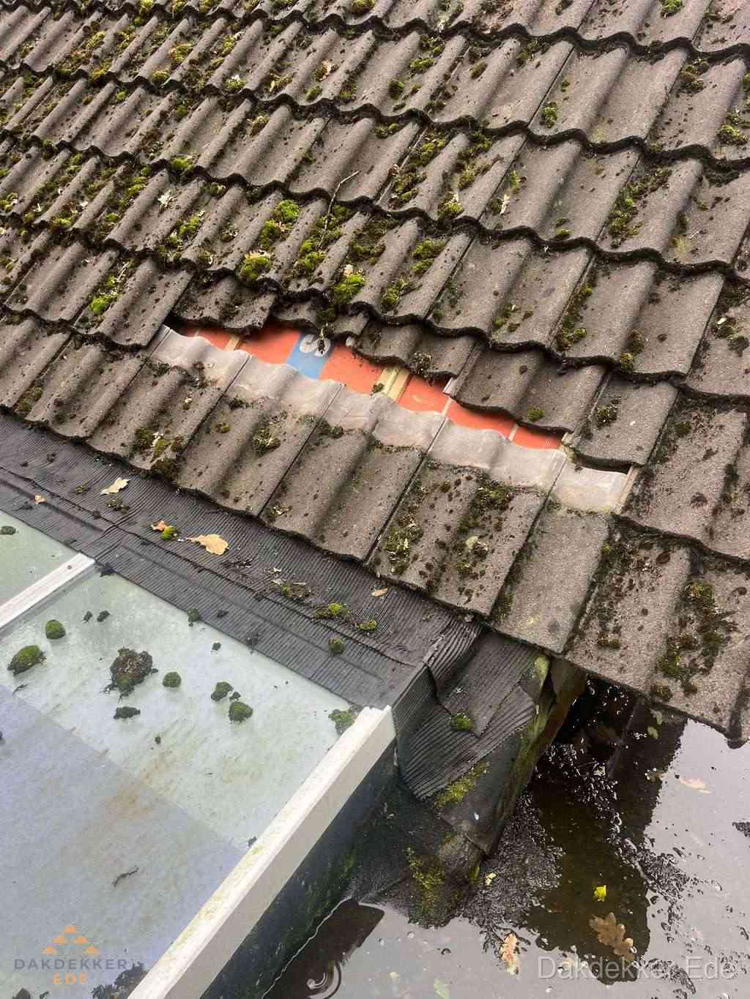
Daklekkage wacht niet, en wij ook niet. Bij stormschade, acute lekkage of losgewaaide pannen staan wij dezelfde dag nog bij u op de stoep. Ook 's nachts en in het weekend.
Bij grotere schade maken wij eerst alles waterdicht en plannen we daarna de definitieve reparatie. Zo blijft een klein probleem klein.
Bel direct: 085 019 04 25Op platte daken werken we met EPDM en bitumen, op hellende daken met dakpannen en leien. Elke klus begint met een gratis inspectie, zodat u vooraf weet wat het kost.

Wij sporen de oorzaak op: bij dakpannen, zinkwerk, loodslabben, dakgoten, dakdoorvoeren of op het platte dak. Eerst maken we het waterdicht, daarna repareren we definitief.
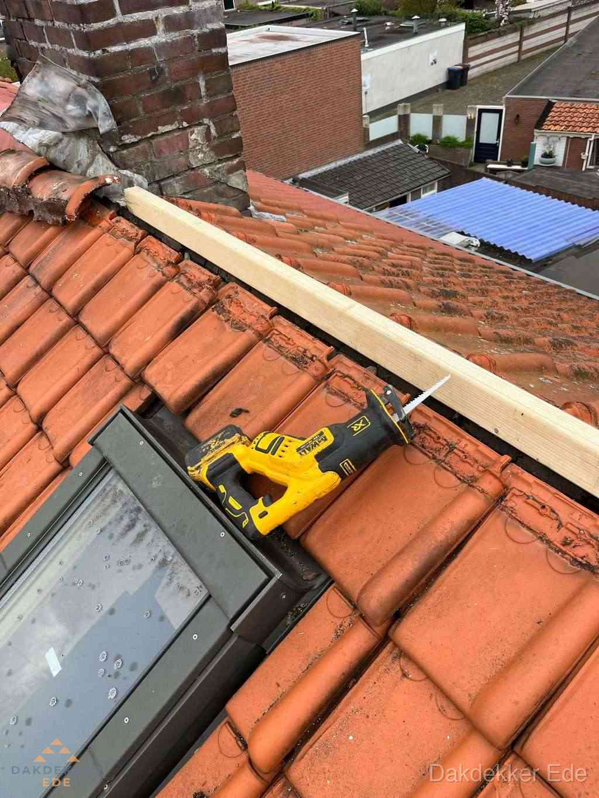
Stormschade of losse dakpannen? Wij repareren uw dak snel en vakkundig, met een resultaat dat blijft liggen.
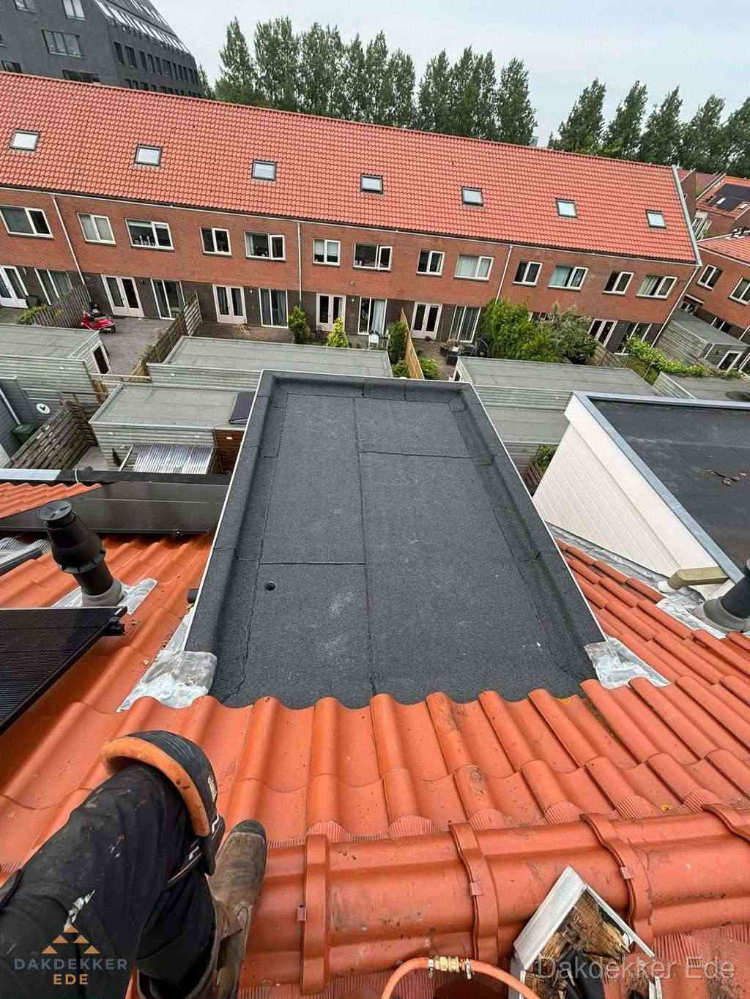
EPDM of APP- en SBS-bitumen op het platte dak, pannen of leien op het hellende dak. Wij adviseren wat bij uw woning en budget past, halen de oude laag weg en leveren het dak netjes en waterdicht op.
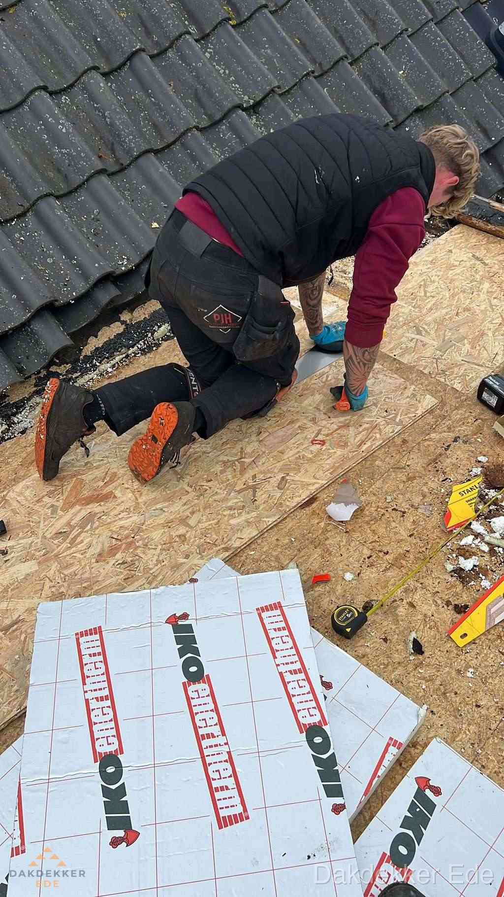
Dakbeschot, isolatie, dakbedekking, goten en zinkwerk in één keer vernieuwd. Isoleren we uw dak, dan halen we minimaal Rc 3,5: de eis voor ISDE-subsidie. U krijgt een vaste prijs vooraf.
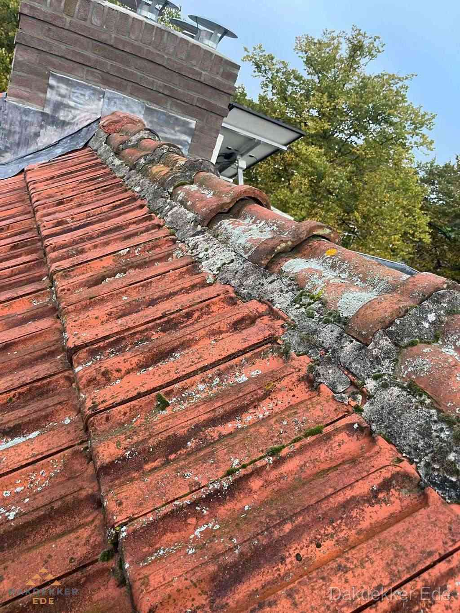
Wij controleren dakbedekking, pannen, goten, zinkwerk, schoorsteen en dakdoorvoeren, op verzoek ook de isolatie. U hoort wat echt moet gebeuren en wat kan wachten. Soms is dat gewoon: alles is prima in orde.
Geen verplichtingen en geen verkooppraatje. Gewoon duidelijkheid over uw dak.
U belt ons of vraagt een inspectie aan. U krijgt meteen iemand aan de lijn die meedenkt.
Wij bekijken uw dak gratis, 30 tot 60 minuten. U krijgt een rapport met foto's en een vrijblijvende offerte met vaste prijs.
Wij voeren het dakwerk vakkundig uit en leveren uw huis netjes op. Ook na de klus blijven we bereikbaar.
Foto's van ons eigen werk: van slopen tot de laatste naad.
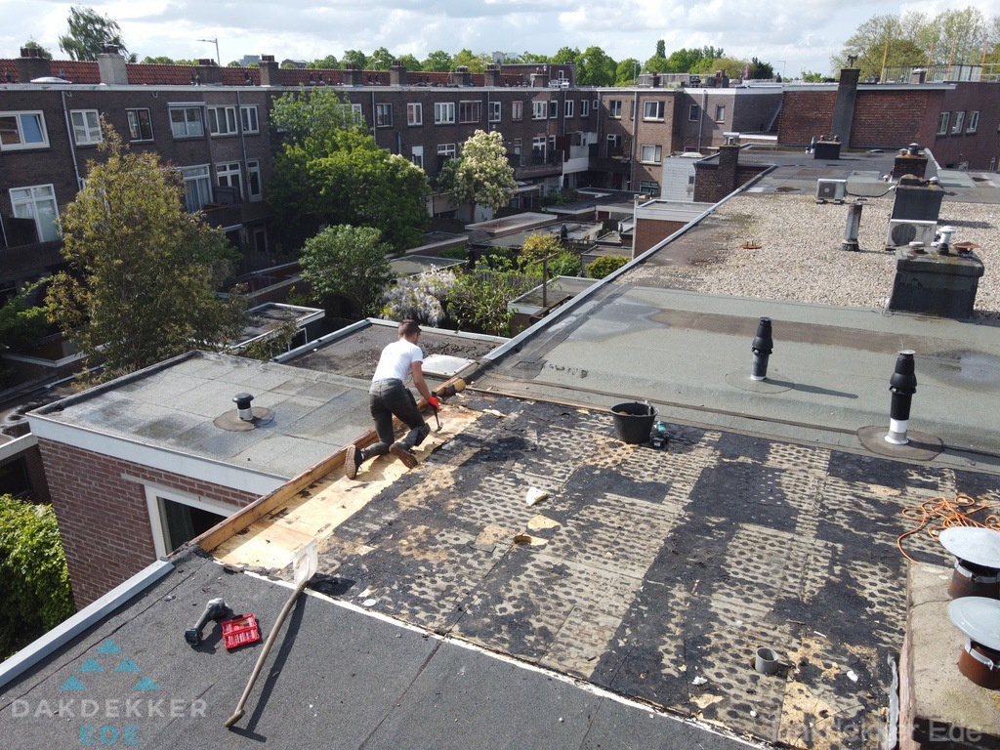
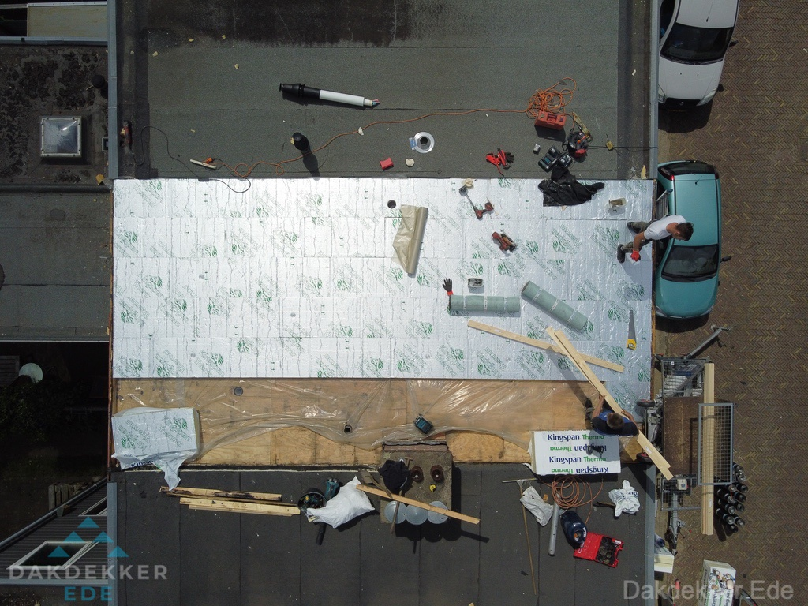
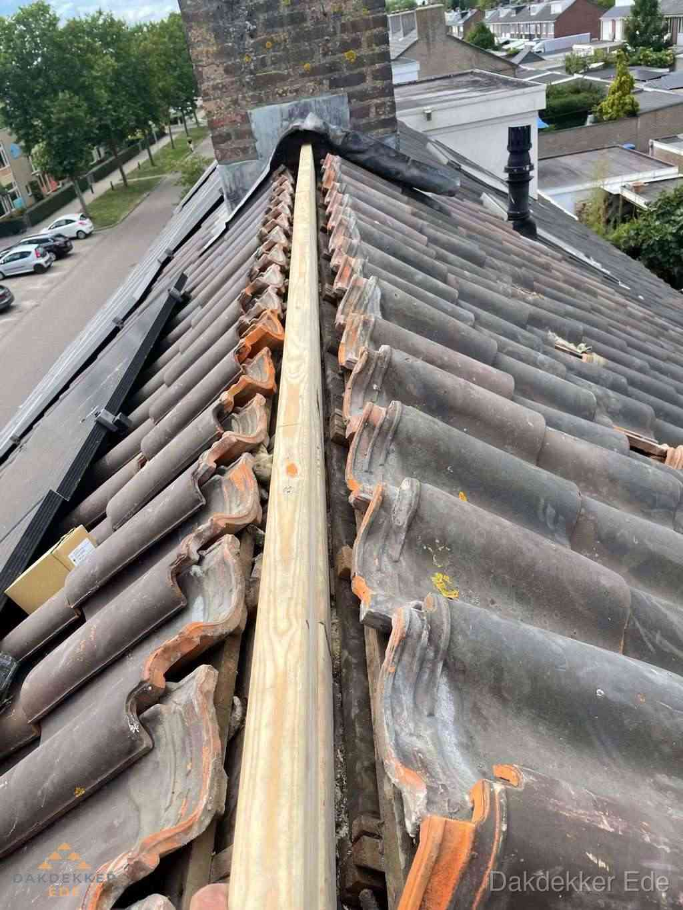
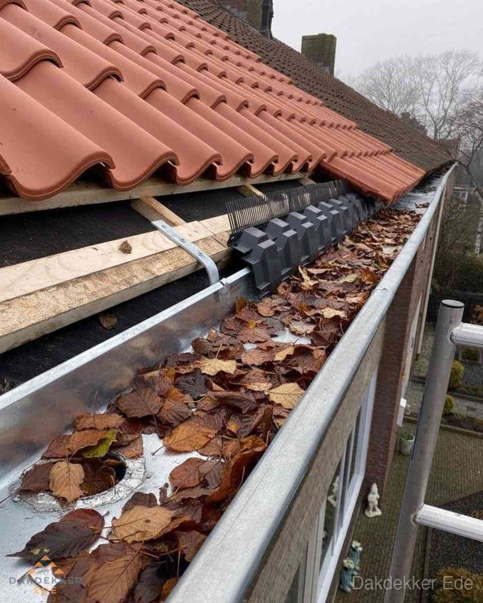
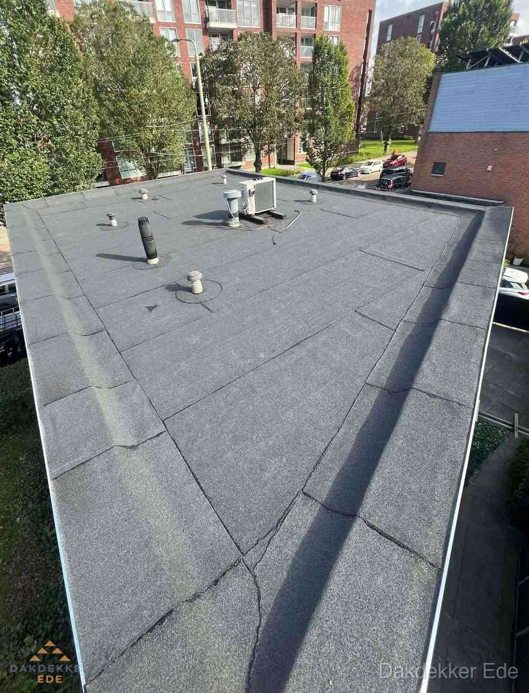
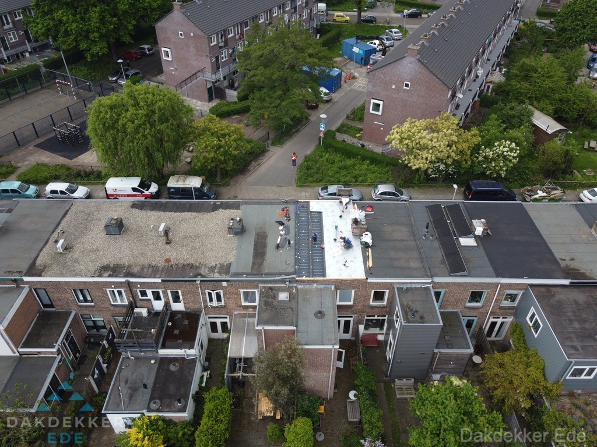
Over materialen adviseren wij eerlijk. Levensduur is een richtlijn, geen garantie: met zo'n 760 mm regen per jaar vraagt het weer op de Veluwe veel van uw dak. Twijfelt u? Een inspectie kost u niets.
"De dakdekker uit Ede heeft ons dak in Halderbrink uitstekend en vakkundig gerenoveerd. Wij zijn super tevreden over het resultaat! 👌"
Wij zijn 24 uur per dag, 7 dagen per week bereikbaar. Liever schriftelijk? Stuur een bericht en wij nemen contact met u op.
Bel 085 019 04 25